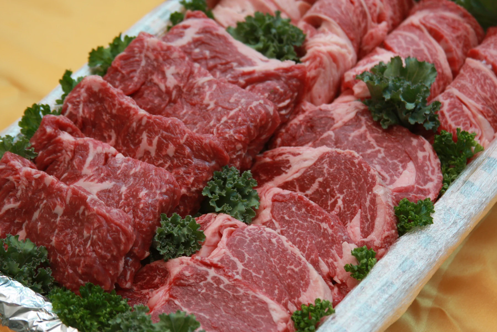

FOR YOUR TABLE01 / RETAIL
오늘의 식탁을 위한
한우 정육
가족과 나누는 저녁, 소중한 사람과의 한 끼.
두 정육 매장과 네이버 온라인 판매로
일상 가까이에서 한우를 전합니다.
한우 도매 · 소매 · 유통
함께 먹는 한 끼부터
함께 성장하는 거래까지.
한우로 이어갑니다.

THE TASTE OF HANWOO한우 이미지 · 실제 판매 상품과 다를 수 있습니다.
ABOUT UCHONRI
한우로 이어지는
사람과 식탁.
2024년 설립된 한우면우촌리는 서울을 기반으로
두 정육 매장과 네이버 온라인 판매,
그리고 도매·소매 거래처를 위한 B2B 유통을 운영합니다.
농가에서 공급받는 한우를 매장과 거래처로 연결하며,
일상의 한 끼부터 비즈니스의 다음 주문까지 함께합니다.
RETAIL & DISTRIBUTION
개인의 식탁에서 거래처의 주방까지.
필요한 한우를 함께 이야기합니다.
가족과 나누는 저녁, 소중한 사람과의 한 끼.
두 정육 매장과 네이버 온라인 판매로
일상 가까이에서 한우를 전합니다.
농가에서 도매·소매 거래처까지 이어지는 공급.
필요한 부위와 물량, 납품 일정을
거래처의 운영에 맞춰 상담합니다.
농가 소싱 한우 유통 정육 매장 · 온라인 판매 · 도매 거래처
FIND YOUR HANWOO
등심, 안심, 채끝 등 부위마다 다른 식감과 풍미.
좋아하는 맛과 준비할 인원에 맞춰 문의해 주세요.
불고기부터 국거리까지, 만들 요리에 맞는 한우를 찾아보세요. 필요한 용도와 양을 매장에서 문의해 주세요.
안내된 부위는 용도 예시입니다. 판매 품목·재고·가격은 상담 시 확인해 주세요.
BUSINESS INQUIRY
한우 유통 · 납품이 필요하신가요?
아래 내용을 함께 알려주시면 상담에 도움이 됩니다.
업체명, 담당자 성함, 회신받을 연락처
원하는 부위, 용도, 예상 주문 수량
받으실 지역, 희망 일정과 주문 주기
VISIT OUR STORE
한우면우촌리 리센츠점
서울 송파구 올림픽로 145 1층잠실동 22-6 · 우편번호 05502영업시간과 매장 전화번호는
네이버 지도에서 최신 정보를 확인해 주세요.
서울 송파구
한우면우촌리 리센츠점
BEFORE YOU VISIT
리센츠점은 서울 송파구 올림픽로 145 1층에 있습니다. 위의 네이버 지도에서 위치와 길찾기를 확인하실 수 있습니다. 다른 매장 안내는 이메일로 문의해 주세요.
이메일로 업체명과 연락처, 필요한 품목과 예상 물량, 납품 지역과 일정을 보내주세요. 공급 가능 여부와 조건은 상담을 통해 확인합니다.
네이버 스토어에서 판매 상품을 확인하고 구매하실 수 있습니다. ↗ 매장 판매 품목과 재고, 가격은 시점에 따라 달라질 수 있으니 방문 전 매장에 확인해 주세요.